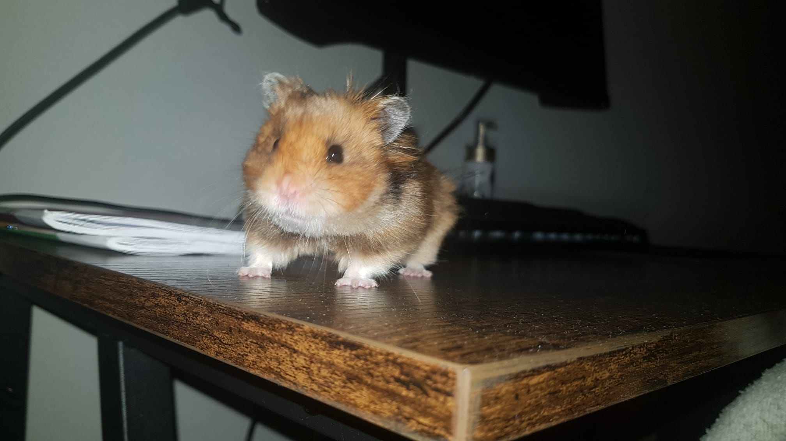

The hamster in the picture below is my hamster, his name is Scar and he is 1 and a half year old.
 Scar is a syrian hamster that i have raised since he was a baby,scar is offspring from the hamster i had before him.
he is a very social hamster that likes to get picked up at night and loves to run around in his hamsterwheel.
Scar is also very friendly as he has never ever bitten me, he pushes me away with his nose if he is not in the mood to play tho.
In the picture below you can see scar when he was a baby.
Well in all honesty all he does is eat,sleep and runs around.
click here to go to the next page